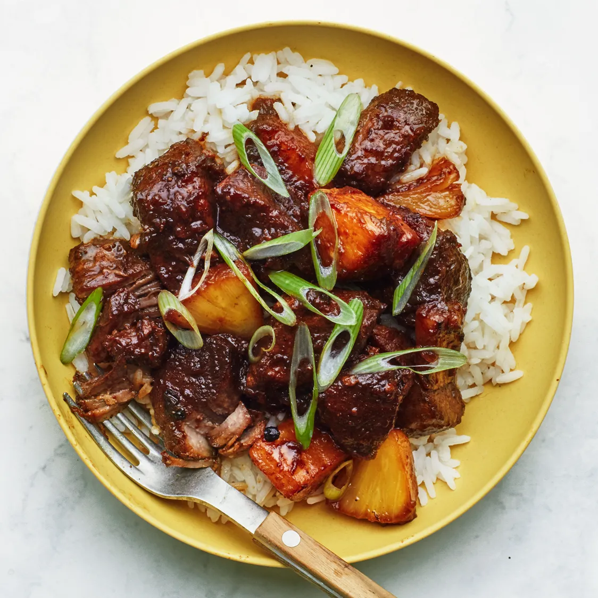

Top Rated Recipes
Out of all the many recipes on PinayYum, these are our shining stars - the recipes we come back to again and again (and again).

Adobo
1817 reviews / 4.6 average

Sinigang
113 reviews / 4.9 average

Sisig
567 reviews / 4.8 average
Pancit
723 reviews / 4.9 average

Arroz Caldo
182 reviews / 4.9 average

Kare-Kare
370 reviews / 4.8 average

Lumpia
393 reviews / 4.8 average
Kaldereta
66 reviews / 4.8 average
Halo-Halo
350 reviews / 4.8 average